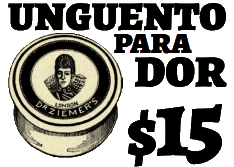

Xarope gaspar-jesus, mais novo xarope para melhorar o seu dia depois de um duelo
unguento para todos que aguentam mais um dia nessa vida de pistoleiro do contestado
El club de
Los Cuerpos
Bill Elm, Woody Jackson
deadman’s gun
Bill Elm, Woody Jackson